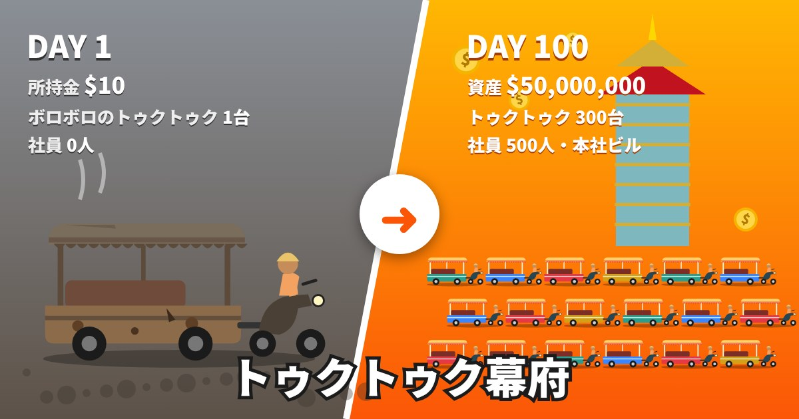

トゥクトゥク幕府Tuk-Tuk ShogunateTuk-Tuk Shogunate
舞台はカンボジアのプノンペン。所持金$10、ボロボロのトゥクトゥク1台の個人ドライバーから、何百台ものトゥクトゥクを抱える交通会社の「将軍」を目指します。プノンペンを制したら、次の舞台はベトナムのホーチミン、そしてインドのデリーへ。Phnom Penh, Cambodia. You start with $10 and one battered tuk-tuk — and aim to become the shogun of a transport company running hundreds of them. Conquer Phnom Penh, then Ho Chi Minh City and Delhi await.ភ្នំពេញ ប្រទេសកម្ពុជា។ អ្នកចាប់ផ្តើមជាមួយ $10 និងតុកតុកចាស់មួយគ្រឿង — ហើយមានគោលដៅក្លាយជាសូហ្គុននៃក្រុមហ៊ុនដឹកជញ្ជូន ដែលដំណើរការតុកតុករាប់រយគ្រឿង។ ដណ្តើមបានភ្នំពេញ បន្ទាប់មកហូជីមិញ និងដេលីកំពុងរង់ចាំ។
遊び方How to playរបៀបលេង
- ジョイスティック（PCはWASD）で運転し、頭上に◆がある客に近づいて乗せるDrive with the joystick (WASD on PC) and pick up passengers marked with a ◆បើកបរដោយយ៉យស្ទីក (WASD លើ PC) ហើយទទួលអ្នកដំណើរដែលមានសញ្ញា ◆
- 制限時間内に光の柱まで運ぶと運賃と評判アップ。ぶつけると車がボロくなるReach the beam of light in time for fares and reputation. Crashes wear your tuk-tuk downទៅដល់ធ្នឹមពន្លឺឲ្យទាន់ពេល ដើម្បីទទួលបានថ្លៃឈ្នួល និងកេរ្តិ៍ឈ្មោះ។ ការបុកធ្វើឲ្យតុកតុករបស់អ្នកខូច
- 稼いだお金で車両強化・車両購入・ドライバー雇用・施設建設をして会社を大きくするSpend your earnings on upgrades, more tuk-tuks, drivers and buildings to grow your companyចំណាយប្រាក់ចំណូលលើការដំឡើងកម្រិត តុកតុកបន្ថែម អ្នកបើកបរ និងអគារ ដើម្បីពង្រីកក្រុមហ៊ុនរបស់អ្នក
見どころHighlightsចំណុចពិសេស
- 個人ドライバーから大企業まで6段階のレベルアップ。建物を買うと街に本当に建っていくSix company levels, from solo driver to giant corporation — every building you buy appears in the cityក្រុមហ៊ុនមានប្រាំមួយកម្រិត ពីអ្នកបើកបរម្នាក់ឯង ដល់សាជីវកម្មយក្ស — អគារនីមួយៗដែលអ្នកទិញ នឹងលេចឡើងក្នុងទីក្រុង
- 配車アプリ・保険・事故・ガソリン価格・評判など、本格的な経営要素Ride-hailing apps, insurance, accidents, fuel prices and reputationកម្មវិធីហៅរថយន្ត ធានារ៉ាប់រង គ្រោះថ្នាក់ តម្លៃប្រេង និងកេរ្តិ៍ឈ្មោះ
- スコールや水祭り、ストライキなどのランダムイベントと、転生（再起業）システムRandom events like monsoon storms, festivals and strikes, plus a prestige systemព្រឹត្តិការណ៍ចៃដន្យ ដូចជាព្យុះរដូវវស្សា ពិធីបុណ្យ និងកូដកម្ម ព្រមទាំងប្រព័ន្ធកិត្យានុភាព
- 車を降りて歩けて、カジノもある。悪いこと（強奪）をすると警察が追ってくるGet out and walk, visit the casino — and if you steal a car, the police will chase youចុះពីរថយន្តហើយដើរ ទៅលេងកាស៊ីណូ — ហើយបើអ្នកលួចរថយន្ត ប៉ូលិសនឹងដេញតាម
- 新章ホーチミン編：高層ビルの大都市で、強力なライバル3社・信号無視の罰金と財産没収・累進課税に挑む超高難度モード。全社買収で完全制覇New chapter, Ho Chi Minh City: a skyscraper metropolis with three ruthless rivals, traffic-light fines and asset seizures, and progressive taxes. Buy them all out to winជំពូកថ្មី ហូជីមិញ៖ ទីក្រុងធំដែលមានអគារខ្ពស់ៗ គូប្រជែងដ៏សាហាវបី ការពិន័យភ្លើងស្តុប និងការរឹបអូសទ្រព្យសម្បត្តិ និងពន្ធកើនតាមកម្រិត។ ទិញពួកគេទាំងអស់ ដើម្បីឈ្នះ
- 新章デリー編：ラール・キラーやインド門を再現した巨大都市。信号はほとんど無く、車・バイク・オートリキシャ・牛で大渋滞。3都市は自由に行き来でき、留守中の会社もプレイ中は稼ぎ続けるNew chapter, Delhi: a huge city with the Red Fort and India Gate, almost no traffic lights and roads packed with cars, bikes, auto-rickshaws and cows. Travel freely between all three cities — the companies you leave behind keep earning while you playជំពូកថ្មី ដេលី៖ ទីក្រុងធំដែលមាន Red Fort និង India Gate ស្ទើរតែគ្មានភ្លើងស្តុប ហើយផ្លូវពោរពេញដោយរថយន្ត ម៉ូតូ រ៉ឺម៉កកង់បី និងគោ។ ធ្វើដំណើរដោយសេរីរវាងទីក្រុងទាំងបី — ក្រុមហ៊ុនដែលអ្នកទុកចោល នៅតែរកចំណូលពេលអ្នកលេង
攻略のコツTipsគន្លឹះ
最初は所持金$10、トゥクトゥク1台からのスタートです。一番のコツは、タンクをなるべく強化して、走れる距離を延ばすことです。ガソリン切れを気にせず長く走れるようになると、遠くの客も乗せられて、稼ぎが大きく変わります。You start with $10 and a single tuk-tuk. The biggest tip: upgrade your fuel tank as much as you can to extend your range. Once you can drive long distances without worrying about running out of fuel, you can take far-off passengers and your earnings change dramatically.អ្នកចាប់ផ្តើមជាមួយ $10 និងតុកតុកមួយគ្រឿង។ គន្លឹះសំខាន់បំផុត៖ ដំឡើងកម្រិតធុងប្រេងឲ្យបានច្រើនតាមដែលអាចធ្វើបាន ដើម្បីពង្រីកចម្ងាយធ្វើដំណើរ។ ពេលអ្នកអាចបើកបរឆ្ងាយ ដោយមិនបារម្ភពីការអស់ប្រេង អ្នកអាចទទួលអ្នកដំណើរពីចម្ងាយ ហើយប្រាក់ចំណូលរបស់អ្នកនឹងផ្លាស់ប្តូរយ៉ាងខ្លាំង។
あわせて、序盤は事故を起こさず丁寧に運んで評判を上げましょう。車がボロくなると稼ぎが落ちるので、修理も早めに。お金がたまったらドライバーを雇い、自分が運転していない間も稼げる仕組みを作ると、会社が一気に大きくなります。Early on, also drive carefully and avoid crashes to build your reputation. A worn-out tuk-tuk earns less, so repair it early. Once you have saved up, hire drivers so you earn even when you are not driving, and your company will grow fast.នៅដំណាក់កាលដំបូង ត្រូវបើកបរដោយប្រុងប្រយ័ត្ន និងជៀសវាងការបុក ដើម្បីកសាងកេរ្តិ៍ឈ្មោះ។ តុកតុកដែលខូច រកចំណូលបានតិច ដូច្នេះត្រូវជួសជុលវាឲ្យបានឆាប់។ ពេលសន្សំប្រាក់បានហើយ ចូរជួលអ្នកបើកបរ ដើម្បីរកចំណូលទោះអ្នកមិនបានបើកបរក៏ដោយ ហើយក្រុមហ៊ុនរបស់អ្នកនឹងរីកចម្រើនយ៉ាងឆាប់រហ័ស។
制作についてAbout the makingអំពីការបង្កើត
トゥクトゥク幕府は、先輩のアイデアと、私自身のカンボジアでの体験が合わさって生まれたゲームです。カンボジアで過ごす中で、私は街を走るトゥクトゥクがすっかり好きになりました。風を受けながら渋滞の中をすり抜けていく、あの体験をゲームにしたいと思ったのが始まりです。始まりの都市をプノンペンにしたのも、ゲームにクメール語を入れたのも、カンボジアでたくさんの感銘を受けたからです。スコールや水祭りなど、現地で見た光景もイベントとして取り入れています。Tuk-Tuk Shogunate was born from my senpai’s idea combined with my own experiences in Cambodia. While spending time there, I fell in love with the tuk-tuks running through the streets. It started with wanting to turn that feeling of weaving through traffic with the wind in your face into a game. Making Phnom Penh the first city and adding Khmer to the game both come from how deeply Cambodia moved me. Scenes I saw there, like monsoon downpours and the Water Festival, appear as in-game events.Tuk-Tuk Shogunate កើតចេញពីគំនិតរបស់បងនៅសាលា (senpai) របស់ខ្ញុំ រួមផ្សំជាមួយបទពិសោធន៍ផ្ទាល់ខ្លួនរបស់ខ្ញុំនៅកម្ពុជា។ ពេលរស់នៅទីនោះ ខ្ញុំបានលង់ស្រលាញ់តុកតុកដែលបើកបរតាមផ្លូវ។ វាចាប់ផ្តើមពីការចង់ប្រែក្លាយអារម្មណ៍នៃការបត់បែនកាត់ចរាចរណ៍ ដោយមានខ្យល់បក់ប៉ះមុខ ឲ្យទៅជាហ្គេម។ ការជ្រើសរើសភ្នំពេញជាទីក្រុងទីមួយ និងការបន្ថែមភាសាខ្មែរទៅក្នុងហ្គេម សុទ្ធតែកើតចេញពីការដែលកម្ពុជាបានធ្វើឲ្យខ្ញុំរំភើបចិត្តយ៉ាងជ្រាលជ្រៅ។ ទិដ្ឋភាពដែលខ្ញុំបានឃើញនៅទីនោះ ដូចជាភ្លៀងធ្លាក់ខ្លាំងនៅរដូវវស្សា និងពិធីបុណ្យអុំទូក លេចឡើងជាព្រឹត្តិការណ៍ក្នុងហ្គេម។